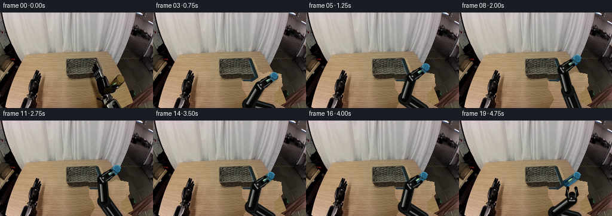
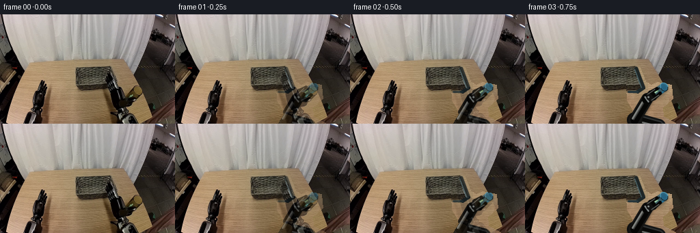
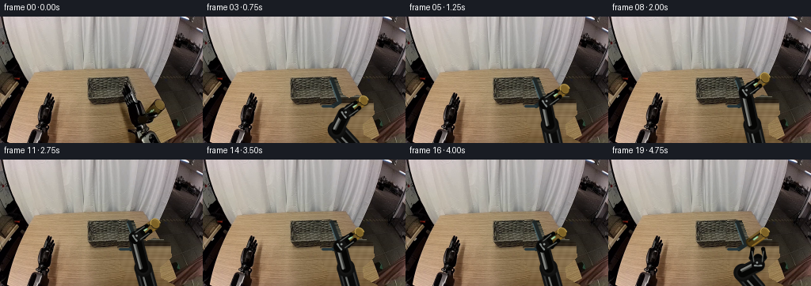
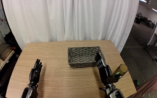
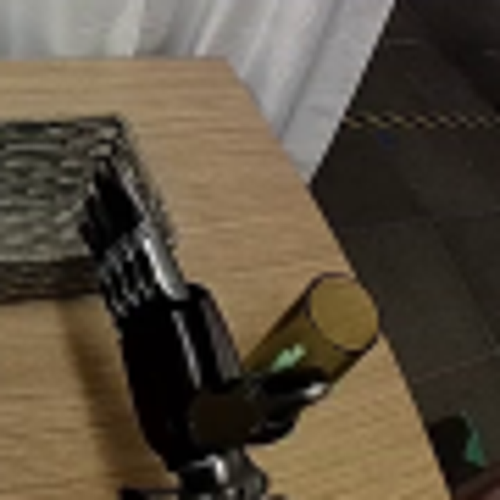
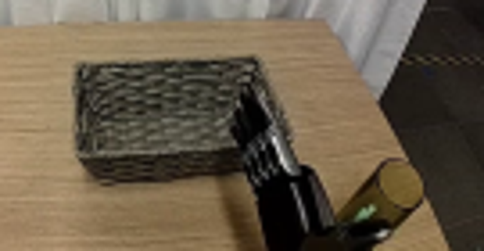
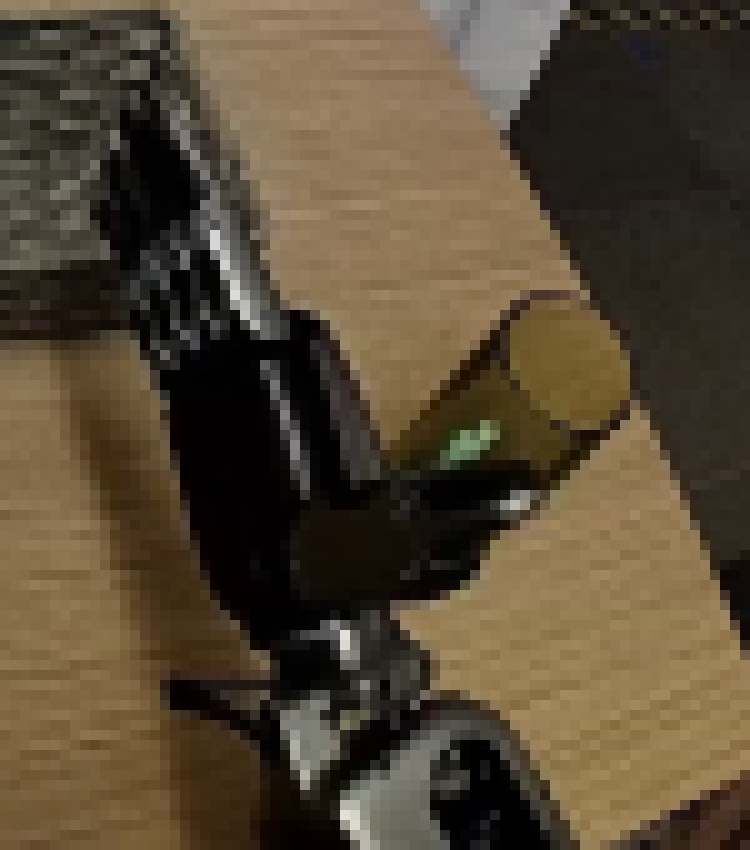
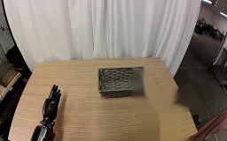
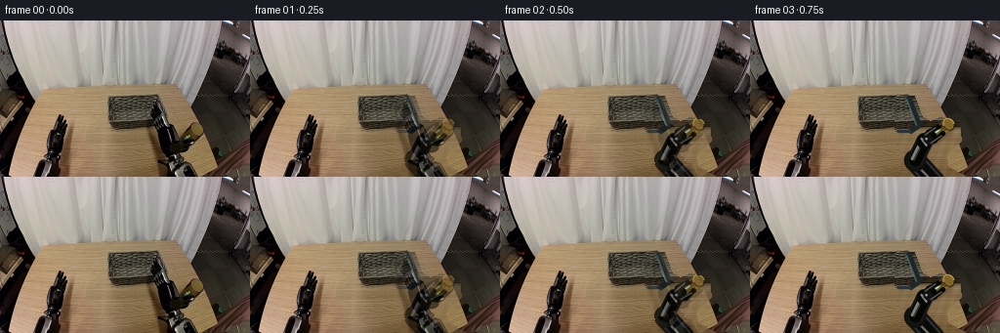

CODING AGENTS AS PIXEL WORLD MODELS
traex/GPT-5.6-Sol · common50_0036
点击播放 · 原生 RGB 像素
逐轮保存的候选
回放视频、检查图与代码变化。
每份候选均可单独播放。实际图片检查记录在下方工具轨迹中。
候选 01播放与检查图
点击播放 · 原生 RGB 像素


展开代码变化
--- 上一保存版本
+++ 本次保存版本
@@ -0,0 +1,258 @@
+from pathlib import Path
+import math
+import cv2
+import numpy as np
+from PIL import Image
+import artifact_io
+
+# Deterministic, local 2-D articulated reconstruction. The photographed scene is
+# the plate; only the right manipulator and the cup are reconstructed while moving.
+CASE_DIR = Path(__file__).resolve().parent
+S = 4
+W, H = 256, 160
+
+
+def poly_mask(shape, points):
+ m = np.zeros(shape[:2], np.uint8)
+ cv2.fillPoly(m, [np.asarray(points, np.int32)], 255)
+ return m
+
+
+def make_clean_plate(src):
+ """Reveal plausible table/basket texture behind the photographed right arm."""
+ out = src.copy()
+ removal = [(150,77),(168,77),(176,98),(184,103),(194,99),(214,103),
+ (216,123),(201,136),(202,149),(220,159),(151,159),(159,146),
+ (156,137),(149,126),(148,105)]
+ rm = poly_mask(src.shape, removal)
+ basket = poly_mask(src.shape, [(109,76),(163,76),(175,108),(164,115),(112,111)])
+
+ # Same-row sampling keeps the fine horizontal wood grain coherent.
+ ys, xs = np.nonzero((rm > 0) & (basket == 0))
+ for y, x in zip(ys, xs):
+ sx = 77 + ((x - 149) % 31)
+ out[y, x] = src[y, sx]
+
+ # Woven material is locally repetitive. Continue the visible weave from left.
+ ys, xs = np.nonzero((rm > 0) & (basket > 0))
+ for y, x in zip(ys, xs):
+ sx = max(112, x - 28)
+ out[y, x] = src[y, sx]
+
+ # Re-establish the basket's obscured right and lower rims.
+ cv2.line(out, (162,78), (173,107), (38,38,31), 3, cv2.LINE_AA)
+ cv2.line(out, (173,107), (164,113), (42,40,30), 3, cv2.LINE_AA)
+ cv2.line(out, (164,113), (151,113), (58,53,38), 2, cv2.LINE_AA)
+ cv2.line(out, (160,80), (170,107), (105,100,75), 1, cv2.LINE_AA)
+ return out, rm
+
+
+def ease(v):
+ v = float(np.clip(v, 0.0, 1.0))
+ return v*v*(3.0 - 2.0*v)
+
+
+def lerp(a, b, t):
+ t = ease(t)
+ return (a[0] + (b[0]-a[0])*t, a[1] + (b[1]-a[1])*t)
+
+
+def scpt(p):
+ return tuple(int(round(v*S)) for v in p)
+
+
+def line(img, p, q, color, width):
+ cv2.line(img, scpt(p), scpt(q), color, max(1, int(round(width*S))), cv2.LINE_AA)
+
+
+def circle(img, p, r, color, thickness=-1):
+ cv2.circle(img, scpt(p), int(round(r*S)), color,
+ -1 if thickness < 0 else int(round(thickness*S)), cv2.LINE_AA)
+
+
+def ellipse(img, p, axes, angle, color, thickness=-1):
+ cv2.ellipse(img, scpt(p), scpt(axes), angle, 0, 360, color,
+ -1 if thickness < 0 else int(round(thickness*S)), cv2.LINE_AA)
+
+
+def ik_elbow(anchor, wrist, l1=36.0, l2=36.0):
+ a = np.asarray(anchor, np.float64)
+ w = np.asarray(wrist, np.float64)
+ dvec = w-a
+ d = float(np.linalg.norm(dvec))
+ if d < 1e-5:
+ return (anchor[0]-l1, anchor[1])
+ # Keep fixed rigid link lengths; clamp only beyond the physical reach envelope.
+ dc = np.clip(d, abs(l1-l2)+1e-3, l1+l2-1e-3)
+ u = dvec/d
+ along = (l1*l1-l2*l2+dc*dc)/(2*dc)
+ height = math.sqrt(max(0.0, l1*l1-along*along))
+ perp = np.array([u[1], -u[0]]) # left/upward elbow solution in this view
+ e = a + u*along + perp*height
+ return float(e[0]), float(e[1])
+
+
+def add_shadow(canvas, glass_center, lift, wrist, elbow):
+ shadow = np.zeros(canvas.shape[:2], np.uint8)
+ # Robot shadows remain tight; the lifted glass shadow separates and softens.
+ for p, q, wid in [((195,164), elbow,18),(elbow,wrist,14)]:
+ cv2.line(shadow, scpt((p[0]+2,p[1]+3)), scpt((q[0]+2,q[1]+3)),
+ 110, int(wid*S), cv2.LINE_AA)
+ gc = (glass_center[0] + 2 + 7*lift, glass_center[1] + 3 + 6*lift)
+ ellipse(shadow, gc, (15,6), -34, 90 if lift < .04 else 65)
+ sigma = (1.2 + 2.5*lift)*S
+ shadow = cv2.GaussianBlur(shadow, (0,0), sigma)
+ alpha = shadow.astype(np.float32)[...,None] / 255.0 * .46
+ canvas[:] = np.clip(canvas.astype(np.float32)*(1-alpha),0,255).astype(np.uint8)
+
+
+def draw_arm_body(canvas, wrist, elbow):
+ anchor = (195.0, 164.0)
+ # Metallic edge, black rigid links, and narrow specular streaks.
+ line(canvas, anchor, elbow, (20,20,19), 22)
+ line(canvas, anchor, elbow, (50,50,48), 17)
+ line(canvas, anchor, elbow, (8,9,9), 13)
+ line(canvas, (anchor[0]-3,anchor[1]-1), (elbow[0]-3,elbow[1]), (111,114,111), 2.0)
+ circle(canvas, elbow, 11.3, (15,16,16))
+ circle(canvas, elbow, 7.8, (44,45,43))
+ circle(canvas, elbow, 5.2, (8,9,9))
+ circle(canvas, (elbow[0]-2.0,elbow[1]-2.0), 2.0, (143,146,140))
+
+ line(canvas, elbow, wrist, (20,21,21), 17)
+ line(canvas, elbow, wrist, (4,5,5), 12)
+ # Highlight follows the link, not the image, helping rigid appearance.
+ v=np.asarray(wrist)-np.asarray(elbow); n=np.array([v[1],-v[0]])/(np.linalg.norm(v)+1e-6)
+ line(canvas, tuple(np.asarray(elbow)+n*3.6), tuple(np.asarray(wrist)+n*3.6), (126,130,128), 2.2)
+ line(canvas, tuple(np.asarray(elbow)+n*1.6), tuple(np.asarray(wrist)+n*1.6), (55,58,57), 1.6)
+ circle(canvas, wrist, 8.0, (8,9,9))
+ circle(canvas, wrist, 5.1, (45,47,45))
+ circle(canvas, (wrist[0]-1.5,wrist[1]-1.7), 1.4, (168,170,163))
+
+
+def glass_geometry(center, scale=1.0):
+ # Long axis points toward the visible circular rim.
+ u=np.array([0.819,-0.574],np.float64)
+ n=np.array([-u[1],u[0]])
+ c=np.asarray(center,np.float64)
+ back=c-u*(11.5*scale)
+ front=c+u*(11.5*scale)
+ r=6.4*scale
+ return u,n,back,front,r
+
+
+def draw_glass(canvas, center, scale, lift):
+ u,n,back,front,r=glass_geometry(center,scale)
+ # Translucent brown cylinder body as layered geometry.
+ p1=back+n*r; p2=front+n*r; p3=front-n*r; p4=back-n*r
+ pts=np.array([p1,p2,p3,p4])*S
+ body=np.zeros_like(canvas)
+ cv2.fillConvexPoly(body, np.round(pts).astype(np.int32), (104,78,22), cv2.LINE_AA)
+ alpha=np.zeros(canvas.shape[:2],np.uint8)
+ cv2.fillConvexPoly(alpha,np.round(pts).astype(np.int32),180,cv2.LINE_AA)
+ a=alpha.astype(np.float32)[...,None]/255.0
+ canvas[:]=np.clip(canvas*(1-a)+body*a,0,255).astype(np.uint8)
+
+ angle=math.degrees(math.atan2(u[1],u[0]))
+ # back/base contour
+ ellipse(canvas, tuple(back), (r*.72,r), angle, (52,39,15), -1)
+ ellipse(canvas, tuple(back+u*.8), (r*.55,r*.82), angle, (82,61,19), -1)
+ # warm body shading and a green-white reflection from the real scene
+ line(canvas, tuple(back+n*r*.72), tuple(front+n*r*.72), (145,109,37), 1.2)
+ line(canvas, tuple(back-n*r*.45), tuple(front-n*r*.45), (46,35,16), 2.0)
+ hi0=back+u*6.5-n*1.1; hi1=hi0+u*5.5
+ line(canvas, tuple(hi0), tuple(hi1), (121,185,136), 2.0)
+ line(canvas, tuple(hi0+u*1), tuple(hi1-u*1), (187,213,170), .8)
+ # circular open rim and dark translucent interior
+ ellipse(canvas, tuple(front), (r*.83,r), angle, (45,35,16), -1)
+ ellipse(canvas, tuple(front), (r*.68,r*.82), angle, (141,112,48), -1)
+ ellipse(canvas, tuple(front-u*.35), (r*.52,r*.66), angle, (126,98,38), -1)
+ # near rim catches light
+ arc_center=scpt(tuple(front))
+ cv2.ellipse(canvas,arc_center,scpt((r*.83,r)),angle,200,380,(184,153,76),max(1,S),cv2.LINE_AA)
+
+
+def draw_gripper(canvas, wrist, center, openness):
+ c=np.asarray(center,np.float64); w=np.asarray(wrist,np.float64)
+ u=(c-w); u=u/(np.linalg.norm(u)+1e-6)
+ n=np.array([-u[1],u[0]])
+ sep=4.8 + 3.8*openness
+ knuckle=w+u*4.0
+ # black palm block and silver wrist collar
+ line(canvas, tuple(w-u*2), tuple(knuckle+u*4), (5,6,6), 11.5)
+ line(canvas, tuple(w-u*1+n*4.2), tuple(w-u*1-n*4.2), (134,136,130), 2.0)
+ # Two rigid opposing jaws. Tips wrap around the glass without changing length.
+ for s in (-1.0,1.0):
+ root=knuckle+n*s*4.3
+ bend=w+u*9.0+n*s*sep
+ tip=w+u*20.0+n*s*sep*.78
+ line(canvas, tuple(root), tuple(bend), (18,19,19), 5.4)
+ line(canvas, tuple(bend), tuple(tip), (5,6,6), 4.2)
+ line(canvas, tuple(root+n*s*.9), tuple(tip+n*s*.9), (94,98,95), .9)
+ circle(canvas, tuple(tip), 2.5, (4,5,5))
+ circle(canvas, tuple(knuckle), 4.6, (17,18,18))
+ circle(canvas, tuple(knuckle-u*1.2-n*1.2), 1.2, (145,148,142))
+
+
+def motion(i):
+ source=(194.0,113.0); hover=(189.0,84.5); target=(188.5,99.0)
+ if i <= 3: center=source; lift=0.0
+ elif i <= 7:
+ center=lerp(source,hover,(i-3)/4); lift=ease((i-3)/4)
+ elif i <= 10:
+ center=lerp(hover,(185.7,86.2),(i-7)/3); lift=1.0
+ elif i <= 14:
+ center=lerp((185.7,86.2),target,(i-10)/4); lift=1.0-ease((i-10)/4)
+ else: center=target; lift=0.0
+
+ if i <= 1: openness=1.0
+ elif i <= 3: openness=1.0-ease((i-1)/2)*.86
+ elif i <= 15: openness=.14
+ elif i <= 17: openness=.14+ease((i-15)/2)*.86
+ else: openness=1.0
+
+ u=np.array([.819,-.574])
+ if i <= 17:
+ wrist=tuple(np.asarray(center)-u*18.5)
+ else:
+ wrist=lerp(tuple(np.asarray(target)-u*18.5),(189.0,133.0),(i-17)/2)
+ scale=1.0+.075*lift
+ return center,lift,openness,wrist,scale
+
+
+def render(plate, i):
+ hi=cv2.resize(plate,(W*S,H*S),interpolation=cv2.INTER_NEAREST)
+ center,lift,openness,wrist,scale=motion(i)
+ elbow=ik_elbow((195.0,164.0),wrist)
+ add_shadow(hi,center,lift,wrist,elbow)
+ draw_arm_body(hi,wrist,elbow)
+ # The cup is behind the closing jaw tips but ahead of the palm.
+ draw_glass(hi,center,scale,lift)
+ draw_gripper(hi,wrist,center,openness)
+ lo=cv2.resize(hi,(W,H),interpolation=cv2.INTER_AREA)
+ return cv2.cvtColor(lo,cv2.COLOR_BGR2RGB)
+
+
+def main():
+ src_rgb=np.asarray(Image.open(CASE_DIR/'first_frame.png').convert('RGB'),dtype=np.uint8)
+ assert src_rgb.shape==(H,W,3)
+ src=cv2.cvtColor(src_rgb,cv2.COLOR_RGB2BGR)
+ plate, removal=make_clean_plate(src)
+ frames=[src_rgb.copy()]
+ for i in range(1,20):
+ fr=render(plate,i)
+ # A short photographic handoff prevents a one-frame pop while retaining
+ # exact frame 00. Blend only the original occlusion area, never the scene.
+ if i in (1,2):
+ gen_bgr=cv2.cvtColor(fr,cv2.COLOR_RGB2BGR)
+ amt=.48 if i==1 else .78
+ m=(removal.astype(np.float32)/255.0*amt)[...,None]
+ mix=np.clip(src.astype(np.float32)*(1-m)+gen_bgr.astype(np.float32)*m,0,255).astype(np.uint8)
+ fr=cv2.cvtColor(mix,cv2.COLOR_BGR2RGB)
+ frames.append(fr)
+ arr=np.stack(frames).astype(np.uint8)
+ assert np.array_equal(arr[0],src_rgb)
+ artifact_io.save(arr,CASE_DIR)
+
+
+if __name__=='__main__':
+ main()
候选 02播放与检查图
点击播放 · 原生 RGB 像素

展开代码变化
--- 上一保存版本
+++ 本次保存版本
@@ -27,11 +27,13 @@
rm = poly_mask(src.shape, removal)
basket = poly_mask(src.shape, [(109,76),(163,76),(175,108),(164,115),(112,111)])
- # Same-row sampling keeps the fine horizontal wood grain coherent.
+ # Extend each horizontal scanline from the last unobscured wood pixel.
+ # Fine deterministic luminance waves preserve grain without obvious tiling.
ys, xs = np.nonzero((rm > 0) & (basket == 0))
for y, x in zip(ys, xs):
- sx = 77 + ((x - 149) % 31)
- out[y, x] = src[y, sx]
+ base = src[y, min(146, x)] if x < 150 else src[y, 146]
+ grain = 3.2*math.sin(x*.62 + y*.19) + 1.6*math.sin(x*.17-y*.41)
+ out[y, x] = np.clip(base.astype(np.float32) + grain, 0, 255)
# Woven material is locally repetitive. Continue the visible weave from left.
ys, xs = np.nonzero((rm > 0) & (basket > 0))
@@ -75,7 +77,7 @@
-1 if thickness < 0 else int(round(thickness*S)), cv2.LINE_AA)
-def ik_elbow(anchor, wrist, l1=36.0, l2=36.0):
+def ik_elbow(anchor, wrist, l1=28.0, l2=22.0):
a = np.asarray(anchor, np.float64)
w = np.asarray(wrist, np.float64)
dvec = w-a
@@ -95,7 +97,7 @@
def add_shadow(canvas, glass_center, lift, wrist, elbow):
shadow = np.zeros(canvas.shape[:2], np.uint8)
# Robot shadows remain tight; the lifted glass shadow separates and softens.
- for p, q, wid in [((195,164), elbow,18),(elbow,wrist,14)]:
+ for p, q, wid in [((188,164), elbow,17),(elbow,wrist,13)]:
cv2.line(shadow, scpt((p[0]+2,p[1]+3)), scpt((q[0]+2,q[1]+3)),
110, int(wid*S), cv2.LINE_AA)
gc = (glass_center[0] + 2 + 7*lift, glass_center[1] + 3 + 6*lift)
@@ -107,7 +109,7 @@
def draw_arm_body(canvas, wrist, elbow):
- anchor = (195.0, 164.0)
+ anchor = (188.0, 164.0)
# Metallic edge, black rigid links, and narrow specular streaks.
line(canvas, anchor, elbow, (20,20,19), 22)
line(canvas, anchor, elbow, (50,50,48), 17)
@@ -146,7 +148,7 @@
p1=back+n*r; p2=front+n*r; p3=front-n*r; p4=back-n*r
pts=np.array([p1,p2,p3,p4])*S
body=np.zeros_like(canvas)
- cv2.fillConvexPoly(body, np.round(pts).astype(np.int32), (104,78,22), cv2.LINE_AA)
+ cv2.fillConvexPoly(body, np.round(pts).astype(np.int32), (22,78,104), cv2.LINE_AA)
alpha=np.zeros(canvas.shape[:2],np.uint8)
cv2.fillConvexPoly(alpha,np.round(pts).astype(np.int32),180,cv2.LINE_AA)
a=alpha.astype(np.float32)[...,None]/255.0
@@ -154,21 +156,21 @@
angle=math.degrees(math.atan2(u[1],u[0]))
# back/base contour
- ellipse(canvas, tuple(back), (r*.72,r), angle, (52,39,15), -1)
- ellipse(canvas, tuple(back+u*.8), (r*.55,r*.82), angle, (82,61,19), -1)
+ ellipse(canvas, tuple(back), (r*.72,r), angle, (15,39,52), -1)
+ ellipse(canvas, tuple(back+u*.8), (r*.55,r*.82), angle, (19,61,82), -1)
# warm body shading and a green-white reflection from the real scene
- line(canvas, tuple(back+n*r*.72), tuple(front+n*r*.72), (145,109,37), 1.2)
- line(canvas, tuple(back-n*r*.45), tuple(front-n*r*.45), (46,35,16), 2.0)
+ line(canvas, tuple(back+n*r*.72), tuple(front+n*r*.72), (37,109,145), 1.2)
+ line(canvas, tuple(back-n*r*.45), tuple(front-n*r*.45), (16,35,46), 2.0)
hi0=back+u*6.5-n*1.1; hi1=hi0+u*5.5
- line(canvas, tuple(hi0), tuple(hi1), (121,185,136), 2.0)
- line(canvas, tuple(hi0+u*1), tuple(hi1-u*1), (187,213,170), .8)
+ line(canvas, tuple(hi0), tuple(hi1), (136,185,121), 2.0)
+ line(canvas, tuple(hi0+u*1), tuple(hi1-u*1), (170,213,187), .8)
# circular open rim and dark translucent interior
- ellipse(canvas, tuple(front), (r*.83,r), angle, (45,35,16), -1)
- ellipse(canvas, tuple(front), (r*.68,r*.82), angle, (141,112,48), -1)
- ellipse(canvas, tuple(front-u*.35), (r*.52,r*.66), angle, (126,98,38), -1)
+ ellipse(canvas, tuple(front), (r*.83,r), angle, (16,35,45), -1)
+ ellipse(canvas, tuple(front), (r*.68,r*.82), angle, (48,112,141), -1)
+ ellipse(canvas, tuple(front-u*.35), (r*.52,r*.66), angle, (38,98,126), -1)
# near rim catches light
arc_center=scpt(tuple(front))
- cv2.ellipse(canvas,arc_center,scpt((r*.83,r)),angle,200,380,(184,153,76),max(1,S),cv2.LINE_AA)
+ cv2.ellipse(canvas,arc_center,scpt((r*.83,r)),angle,200,380,(76,153,184),max(1,S),cv2.LINE_AA)
def draw_gripper(canvas, wrist, center, openness):
@@ -222,7 +224,7 @@
def render(plate, i):
hi=cv2.resize(plate,(W*S,H*S),interpolation=cv2.INTER_NEAREST)
center,lift,openness,wrist,scale=motion(i)
- elbow=ik_elbow((195.0,164.0),wrist)
+ elbow=ik_elbow((188.0,164.0),wrist)
add_shadow(hi,center,lift,wrist,elbow)
draw_arm_body(hi,wrist,elbow)
# The cup is behind the closing jaw tips but ahead of the palm.
可观测工具轨迹
实际执行的命令与返回图片。
命令 1exit 0
/bin/bash -lc "cat prompt.txt && printf '\\n--- GENERATION_RULES.md ---\\n' && cat GENERATION_RULES.md"
命令 2exit 0
/bin/bash -lc "find . -maxdepth 2 -type f -printf '%p\\n' | sort && printf '\\n--- tools ---\\n' && command -v ffmpeg || true && command -v python3 || true"
命令 3exit 0
/bin/bash -lc "cat task_spec.json && printf '\\n--- artifact_io.py ---\\n' && sed -n '1,260p' artifact_io.py"
命令 4exit 0
/bin/bash -lc "python3 - <<'PY'
from PIL import Image
import numpy as np
im=np.asarray(Image.open('first_frame.png').convert('RGB'))
print(im.shape,im.dtype, im.min(),im.max())
# sample colors and bounding rough coordinates based image
for p in [(203,79),(200,83),(198,90),(202,97),(180,108),(195,113),(164,106),(158,99)]:
x,y=p; print(p,im[y,x].tolist())
PY"命令 5exit 0
/bin/bash -lc "python3 - <<'PY'
from PIL import Image
im=Image.open('first_frame.png')
im.crop((140,55,230,145)).resize((720,720)).save('crop_right.png')
im.crop((90,60,225,130)).resize((810,420)).save('crop_scene.png')
PY"命令 6exit 0
/bin/bash -lc "python3 - <<'PY'
try:
import cv2; print('cv2',cv2.__version__)
except Exception as e: print('no cv2',e)
PY"命令 7exit 0
/bin/bash -lc "python3 - <<'PY'
from PIL import Image
im=Image.open('first_frame.png')
im.crop((145,75,220,160)).resize((750,850),Image.Resampling.NEAREST).save('robot_nearest.png')
PY"命令 8exit 0
/bin/bash -lc "cat > generate.py <<'PY'
from pathlib import Path
import math
import cv2
import numpy as np
from PIL import Image
import artifact_io
# Deterministic, local 2-D articulated reconstruction. The photographed scene is
# the plate; only the right manipulator and the cup are reconstructed while moving.
CASE_DIR = Path(__file__).resolve().parent
S = 4
W, H = 256, 160
def poly_mask(shape, points):
m = np.zeros(shape[:2], np.uint8)
cv2.fillPoly(m, [np.asarray(points, np.int32)], 255)
return m
def make_clean_plate(src):
\"\"\"Reveal plausible table/basket texture behind the photographed right arm.\"\"\"
out = src.copy()
removal = [(150,77),(168,77),(176,98),(184,103),(194,99),(214,103),
(216,123),(201,136),(202,149),(220,159),(151,159),(159,146),
(156,137),(149,126),(148,105)]
rm = poly_mask(src.shape, removal)
basket = poly_mask(src.shape, [(109,76),(163,76),(175,108),(164,115),(112,111)])
# Same-row sampling keeps the fine horizontal wood grain coherent.
ys, xs = np.nonzero((rm > 0) & (basket == 0))
for y, x in zip(ys, xs):
sx = 77 + ((x - 149) % 31)
out[y, x] = src[y, sx]
# Woven material is locally repetitive. Continue the visible weave from left.
ys, xs = np.nonzero((rm > 0) & (basket > 0))
for y, x in zip(ys, xs):
sx = max(112, x - 28)
out[y, x] = src[y, sx]
# Re-establish the basket's obscured right and lower rims.
cv2.line(out, (162,78), (173,107), (38,38,31), 3, cv2.LINE_AA)
cv2.line(out, (173,107), (164,113), (42,40,30), 3, cv2.LINE_AA)
cv2.line(out, (164,113), (151,113), (58,53,38), 2, cv2.LINE_AA)
cv2.line(out, (160,80), (170,107), (105,100,75), 1, cv2.LINE_AA)
return out, rm
def ease(v):
v = float(np.clip(v, 0.0, 1.0))
return v*v*(3.0 - 2.0*v)
def lerp(a, b, t):
t = ease(t)
return (a[0] + (b[0]-a[0])*t, a[1] + (b[1]-a[1])*t)
def scpt(p):
return tuple(int(round(v*S)) for v in p)
def line(img, p, q, color, width):
cv2.line(img, scpt(p), scpt(q), color, max(1, int(round(width*S))), cv2.LINE_AA)
def circle(img, p, r, color, thickness=-1):
cv2.circle(img, scpt(p), int(round(r*S)), color,
-1 if thickness < 0 else int(round(thickness*S)), cv2.LINE_AA)
def ellipse(img, p, axes, angle, color, thickness=-1):
cv2.ellipse(img, scpt(p), scpt(axes), angle, 0, 360, color,
-1 if thickness < 0 else int(round(thickness*S)), cv2.LINE_AA)
def ik_elbow(anchor, wrist, l1=36.0, l2=36.0):
a = np.asarray(anchor, np.float64)
w = np.asarray(wrist, np.float64)
dvec = w-a
d = float(np.linalg.norm(dvec))
if d < 1e-5:
return (anchor[0]-l1, anchor[1])
# Keep fixed rigid link lengths; clamp only beyond the physical reach envelope.
dc = np.clip(d, abs(l1-l2)+1e-3, l1+l2-1e-3)
u = dvec/d
along = (l1*l1-l2*l2+dc*dc)/(2*dc)
height = math.sqrt(max(0.0, l1*l1-along*along))
perp = np.array([u[1], -u[0]]) # left/upward elbow solution in this view
e = a + u*along + perp*height
return float(e[0]), float(e[1])
def add_shadow(canvas, glass_center, lift, wrist, elbow):
shadow = np.zeros(canvas.shape[:2], np.uint8)
# Robot shadows remain tight; the lifted glass shadow separates and softens.
for p, q, wid in [((195,164), elbow,18),(elbow,wrist,14)]:
cv2.line(shadow, scpt((p[0]+2,p[1]+3)), scpt((q[0]+2,q[1]+3)),
110, int(wid*S), cv2.LINE_AA)
gc = (glass_center[0] + 2 + 7*lift, glass_center[1] + 3 + 6*lift)
ellipse(shadow, gc, (15,6), -34, 90 if lift < .04 else 65)
sigma = (1.2 + 2.5*lift)*S
shadow = cv2.GaussianBlur(shadow, (0,0), sigma)
alpha = shadow.astype(np.float32)[...,None] / 255.0 * .46
canvas[:] = np.clip(canvas.astype(np.float32)*(1-alpha),0,255).astype(np.uint8)
def draw_arm_body(canvas, wrist, elbow):
anchor = (195.0, 164.0)
# Metallic edge, black rigid links, and narrow specular streaks.
line(canvas, anchor, elbow, (20,20,19), 22)
line(canvas, anchor, elbow, (50,50,48), 17)
line(canvas, anchor, elbow, (8,9,9), 13)
line(canvas, (anchor[0]-3,anchor[1]-1), (elbow[0]-3,elbow[1]), (111,114,111), 2.0)
circle(canvas, elbow, 11.3, (15,16,16))
circle(canvas, elbow, 7.8, (44,45,43))
circle(canvas, elbow, 5.2, (8,9,9))
circle(canvas, (elbow[0]-2.0,elbow[1]-2.0), 2.0, (143,146,140))
line(canvas, elbow, wrist, (20,21,21), 17)
line(canvas, elbow, wrist, (4,5,5), 12)
# Highlight follows the link, not the image, helping rigid appearance.
v=np.asarray(wrist)-np.asarray(elbow); n=np.array([v[1],-v[0]])/(np.linalg.norm(v)+1e-6)
line(canvas, tuple(np.asarray(elbow)+n*3.6), tuple(np.asarray(wrist)+n*3.6), (126,130,128), 2.2)
line(canvas, tuple(np.asarray(elbow)+n*1.6), tuple(np.asarray(wrist)+n*1.6), (55,58,57), 1.6)
circle(canvas, wrist, 8.0, (8,9,9))
circle(canvas, wrist, 5.1, (45,47,45))
circle(canvas, (wrist[0]-1.5,wrist[1]-1.7), 1.4, (168,170,163))
def glass_geometry(center, scale=1.0):
# Long axis points toward the visible circular rim.
u=np.array([0.819,-0.574],np.float64)
n=np.array([-u[1],u[0]])
c=np.asarray(center,np.float64)
back=c-u*(11.5*scale)
front=c+u*(11.5*scale)
r=6.4*scale
return u,n,back,front,r
def draw_glass(canvas, center, scale, lift):
u,n,back,front,r=glass_geometry(center,scale)
# Translucent brown cylinder body as layered geometry.
p1=back+n*r; p2=front+n*r; p3=front-n*r; p4=back-n*r
pts=np.array([p1,p2,p3,p4])*S
body=np.zeros_like(canvas)
cv2.fillConvexPoly(body, np.round(pts).astype(np.int32), (104,78,22), cv2.LINE_AA)
alpha=np.zeros(canvas.shape[:2],np.uint8)
cv2.fillConvexPoly(alpha,np.round(pts).astype(np.int32),180,cv2.LINE_AA)
a=alpha.astype(np.float32)[...,None]/255.0
canvas[:]=np.clip(canvas*(1-a)+body*a,0,255).astype(np.uint8)
angle=math.degrees(math.atan2(u[1],u[0]))
# back/base contour
ellipse(canvas, tuple(back), (r*.72,r), angle, (52,39,15), -1)
ellipse(canvas, tuple(back+u*.8), (r*.55,r*.82), angle, (82,61,19), -1)
# warm body shading and a green-white reflection from the real scene
line(canvas, tuple(back+n*r*.72), tuple(front+n*r*.72), (145,109,37), 1.2)
line(canvas, tuple(back-n*r*.45), tuple(front-n*r*.45), (46,35,16), 2.0)
hi0=back+u*6.5-n*1.1; hi1=hi0+u*5.5
line(canvas, tuple(hi0), tuple(hi1), (121,185,136), 2.0)
line(canvas, tuple(hi0+u*1), tuple(hi1-u*1), (187,213,170), .8)
# circular open rim and dark translucent interior
ellipse(canvas, tuple(front), (r*.83,r), angle, (45,35,16), -1)
ellipse(canvas, tuple(front), (r*.68,r*.82), angle, (141,112,48), -1)
ellipse(canvas, tuple(front-u*.35), (r*.52,r*.66), angle, (126,98,38), -1)
# near rim catches light
arc_center=scpt(tuple(front))
cv2.ellipse(canvas,arc_center,scpt((r*.83,r)),angle,200,380,(184,153,76),max(1,S),cv2.LINE_AA)
def draw_gripper(canvas, wrist, center, openness):
c=np.asarray(center,np.float64); w=np.asarray(wrist,np.float64)
u=(c-w); u=u/(np.linalg.norm(u)+1e-6)
n=np.array([-u[1],u[0]])
sep=4.8 + 3.8*openness
knuckle=w+u*4.0
# black palm block and silver wrist collar
line(canvas, tuple(w-u*2), tuple(knuckle+u*4), (5,6,6), 11.5)
line(canvas, tuple(w-u*1+n*4.2), tuple(w-u*1-n*4.2), (134,136,130), 2.0)
# Two rigid opposing jaws. Tips wrap around the glass without changing length.
for s in (-1.0,1.0):
root=knuckle+n*s*4.3
bend=w+u*9.0+n*s*sep
tip=w+u*20.0+n*s*sep*.78
line(canvas, tuple(root), tuple(bend), (18,19,19), 5.4)
line(canvas, tuple(bend), tuple(tip), (5,6,6), 4.2)
line(canvas, tuple(root+n*s*.9), tuple(tip+n*s*.9), (94,98,95), .9)
circle(canvas, tuple(tip), 2.5, (4,5,5))
circle(canvas, tuple(knuckle), 4.6, (17,18,18))
circle(canvas, tuple(knuckle-u*1.2-n*1.2), 1.2, (145,148,142))
def motion(i):
source=(194.0,113.0); hover=(189.0,84.5); target=(188.5,99.0)
if i <= 3: center=source; lift=0.0
elif i <= 7:
center=lerp(source,hover,(i-3)/4); lift=ease((i-3)/4)
elif i <= 10:
center=lerp(hover,(185.7,86.2),(i-7)/3); lift=1.0
elif i <= 14:
center=lerp((185.7,86.2),target,(i-10)/4); lift=1.0-ease((i-10)/4)
else: center=target; lift=0.0
if i <= 1: openness=1.0
elif i <= 3: openness=1.0-ease((i-1)/2)*.86
elif i <= 15: openness=.14
elif i <= 17: openness=.14+ease((i-15)/2)*.86
else: openness=1.0
u=np.array([.819,-.574])
if i <= 17:
wrist=tuple(np.asarray(center)-u*18.5)
else:
wrist=lerp(tuple(np.asarray(target)-u*18.5),(189.0,133.0),(i-17)/2)
scale=1.0+.075*lift
return center,lift,openness,wrist,scale
def render(plate, i):
hi=cv2.resize(plate,(W*S,H*S),interpolation=cv2.INTER_NEAREST)
center,lift,openness,wrist,scale=motion(i)
elbow=ik_elbow((195.0,164.0),wrist)
add_shadow(hi,center,lift,wrist,elbow)
draw_arm_body(hi,wrist,elbow)
# The cup is behind the closing jaw tips but ahead of the palm.
draw_glass(hi,center,scale,lift)
draw_gripper(hi,wrist,center,openness)
lo=cv2.resize(hi,(W,H),interpolation=cv2.INTER_AREA)
return cv2.cvtColor(lo,cv2.COLOR_BGR2RGB)
def main():
src_rgb=np.asarray(Image.open(CASE_DIR/'first_frame.png').convert('RGB'),dtype=np.uint8)
assert src_rgb.shape==(H,W,3)
src=cv2.cvtColor(src_rgb,cv2.COLOR_RGB2BGR)
plate, removal=make_clean_plate(src)
frames=[src_rgb.copy()]
for i in range(1,20):
fr=render(plate,i)
# A short photographic handoff prevents a one-frame pop while retaining
# exact frame 00. Blend only the original occlusion area, never the scene.
if i in (1,2):
gen_bgr=cv2.cvtColor(fr,cv2.COLOR_RGB2BGR)
amt=.48 if i==1 else .78
m=(removal.astype(np.float32)/255.0*amt)[...,None]
mix=np.clip(src.astype(np.float32)*(1-m)+gen_bgr.astype(np.float32)*m,0,255).astype(np.uint8)
fr=cv2.cvtColor(mix,cv2.COLOR_BGR2RGB)
frames.append(fr)
arr=np.stack(frames).astype(np.uint8)
assert np.array_equal(arr[0],src_rgb)
artifact_io.save(arr,CASE_DIR)
if __name__=='__main__':
main()
PY
python3 generate.py
python3 - <<'PY'
import numpy as np
from PIL import Image
z=np.load('pixels.npz')['pixels']
a=np.asarray(Image.open('first_frame.png').convert('RGB'))
p=(z[:,:,0])
r=np.stack([(p>>16)&255,(p>>8)&255,p&255],axis=-1).astype('uint8')
print('tensor',z.shape,z.dtype,'frame0 exact',np.array_equal(a,r))
PY"命令 9exit 0
/bin/bash -lc "python3 - <<'PY'
import cv2
import numpy as np
from PIL import Image
src=cv2.imread('first_frame.png')
pts=np.array([(150,77),(168,77),(176,98),(184,103),(194,99),(214,103),(216,123),(201,136),(202,149),(220,159),(151,159),(159,146),(156,137),(149,126),(148,105)],np.int32)
m=np.zeros(src.shape[:2],np.uint8);cv2.fillPoly(m,[pts],255)
a=cv2.inpaint(src,m,5,cv2.INPAINT_TELEA)
b=cv2.inpaint(src,m,7,cv2.INPAINT_NS)
cv2.imwrite('inpaint_telea.png',a);cv2.imwrite('inpaint_ns.png',b)
PY"命令 10exit 0
/bin/bash -lc "python3 - <<'PY' import numpy as np, math for A,W,L1,L2 in [((188,164),(180,123),28,22),((188,164),(180,123),26,20),((188,159),(180,123),24,18),((188,160),(180,123),25,20)]: a=np.array(A,float);w=np.array(W,float);v=w-a;d=np.linalg.norm(v);u=v/d;al=(L1*L1-L2*L2+d*d)/(2*d);h=math.sqrt(max(0,L1*L1-al*al)); for sign in [1,-1]: perp=np.array([u[1],-u[0]])*sign;e=a+u*al+perp*h;print(A,W,L1,L2,sign,e) PY"
命令 11exit 0
/bin/bash -lc "grep -n \"Same-row\\|def ik\\|for p, q\\|anchor =\\|fillConvex\\|ellipse(canvas, tuple(back)\\|line(canvas, tuple(back\\|hi0\\|tuple(front)\\|arc_center\\|ik_elbow\" generate.py"
命令 12exit 0
/bin/bash -lc 'python3 generate.py'
命令 13exit 0
/bin/bash -lc "python3 - <<'PY'
import ast
from pathlib import Path
ast.parse(Path('generate.py').read_text())
print('syntax ok')
PY"命令 14exit 2
/bin/bash -lc "python3 - <<'PY'
from PIL import Image,ImageDraw
ids=[0,3,5,8,11,14,16,19]
can=Image.new('RGB',(512,4*320),(20,20,20))
for j,i in enumerate(ids):
im=Image.open(f'frames/{i:02d}.png').resize((512,320),Image.Resampling.NEAREST)
d=ImageDraw.Draw(im);d.text((8,8),f'frame {i:02d}',fill='white',stroke_width=2,stroke_fill='black')
can.paste(im,(0,j*160))
can.save('motion_detail.png')
PY
sha256sum pixels.npz frames/00.png frames/19.png generate.py > /tmp/before.sha
python3 generate.py
sha256sum pixels.npz frames/00.png frames/19.png generate.py > /tmp/after.sha
diff -u /tmp/before.sha /tmp/after.sha && cat /tmp/after.sha"命令 15exit 0
/bin/bash -lc "sha256sum pixels.npz frames/00.png frames/19.png generate.py > .tmp/before.sha
python3 generate.py
sha256sum pixels.npz frames/00.png frames/19.png generate.py > .tmp/after.sha
diff -u .tmp/before.sha .tmp/after.sha
python3 - <<'PY'
from pathlib import Path
import numpy as np
from PIL import Image
src=np.asarray(Image.open('first_frame.png').convert('RGB'))
fs=[]
for i in range(20):
a=np.asarray(Image.open(f'frames/{i:02d}.png').convert('RGB'))
assert a.shape==(160,256,3) and a.dtype==np.uint8
fs.append(a)
fs=np.stack(fs)
assert np.array_equal(fs[0],src)
z=np.load('pixels.npz')['pixels']
assert z.shape==(160,256,20) and z.dtype==np.uint32
packed=(fs[:,:,:,0].astype(np.uint32)<<16)|(fs[:,:,:,1].astype(np.uint32)<<8)|fs[:,:,:,2]
assert np.array_equal(z,packed.transpose(1,2,0))
print('validated:',fs.shape,fs.dtype,'frame00 exact; npz exact; deterministic')
print('changed pixels per transition:',[int(np.any(fs[i]"'!=fs[i-1],2).sum()) for i in range(1,20)])
print('"'outputs:',[(p.name,p.stat().st_size) for p in map(Path,['pixels.npz','index.html','inspection.png'])])
PY"视觉工具实际返回图片 1

视觉工具实际返回图片 2

视觉工具实际返回图片 3

视觉工具实际返回图片 4

视觉工具实际返回图片 5

视觉工具实际返回图片 6
视觉工具实际返回图片 7

视觉工具实际返回图片 8

视觉工具实际返回图片 9

保存候选 2 份；完成命令 15 次；可验证图片返回 9 张。原始 API 响应与完整日志保留在本地。